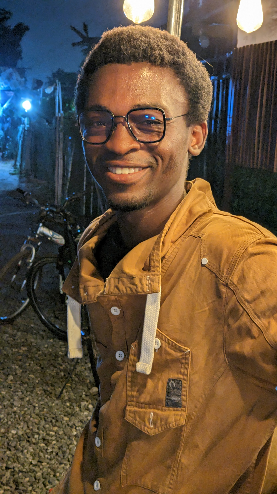

About Me
I'm Mensah Godfred from Ghana, passionate about teaching, technology, mathematics, physics, philosophy, and music. With a degree in Economics and Geography from Cape Coast University, I’m now pursuing Software Development to expand my skills. Currently, I work as a STEMROBO facilitator. My motto: "One day my life will flash before my eyes, will it be worth watching?"

Ghana is a dynamic and diverse country located in West Africa, known for its rich cultural heritage, vibrant history, and welcoming people. With a population of over 30 million, Ghana is a melting pot of various ethnic groups, languages, and traditions, making it a truly unique destination.
The country boasts a blend of modern cities and traditional villages, each offering distinct experiences. Accra, the capital, is a bustling metropolis filled with lively markets, thriving businesses, and a growing arts scene. Meanwhile, other cities like Kumasi, the heart of the Ashanti Kingdom, carry deep historical significance with their royal palaces, museums, and colorful festivals.
Ghana is also celebrated for its breathtaking landscapes, from the golden beaches along the Atlantic coast to the lush forests, waterfalls, and mountains in the north. The country's national parks and wildlife reserves are home to diverse species, offering opportunities for ecotourism and outdoor adventure.
In addition to its natural beauty, Ghana has a rich cultural legacy. The country is known for its music, dance, and art, with traditional drumbeats and colorful dances playing a key role in celebrations. The people of Ghana are known for their warmth, hospitality, and strong sense of community, making visitors feel at home.
Ghana's political history is equally impressive, as the first African country to gain independence from colonial rule in 1957 under the leadership of Kwame Nkrumah. This significant event has shaped the country's identity and its continued push for democracy and development.
Overall, Ghana is a land of opportunity and growth, where tradition and modernity coexist harmoniously, offering an experience that is both rich in heritage and forward-thinking in its vision for the future.